On this page
- Abstract
- 1 Introduction
- 1.1 Problem & Solution Overview
- 2 Related Work
- 3 Solution Architecture
- 3.1 Measure-Preserving Data Subsets
- 3.2 DST as an Optimization Problem
- 3.3 A Genetic-Based Algorithm for Finding DST
- 3.4 Fine-Tuning the Intermediate Configuration
- 4 Experiments
- 4.1 Setup & Methodology
- 4.2 Baseline Methods
- Notes
- References
Abstract
Automated machine learning (AutoML) frameworks have become important tools in the data scientist arsenal, as they dramatically reduce the manual work devoted to the construction of ML pipelines. Such frameworks intelligently search among millions of possible ML pipelines - typically containing feature engineering, model selection, and hyper parameters tuning steps - and finally output an optimal pipeline in terms of predictive accuracy. However, when the dataset is large, each individual configuration takes longer to execute, therefore the overall AutoML running times become increasingly high. To this end, we present SubStrat, an AutoML optimization strategy that tackles the data size, rather than configuration space. It wraps existing AutoML tools, and instead of executing them directly on the entire dataset, SubStrat uses a genetic-based algorithm to find a small yet representative data subset that preserves a particular characteristic of the full data. It then employs the AutoML tool on the small subset, and finally, it refines the resulting pipeline by executing a restricted, much shorter, AutoML process on the large dataset.
1 Introduction
Automated machine learning (AutoML) frameworks [17, 25] are becoming increasingly popular, as they facilitate the time-consuming, difficult task of developing a machine learning model, allowing even non-expert users to build accurate and robust models for their datasets at hand. To automatically develop a model, AutoML frameworks compare millions of ML pipeline configurations, and finally output the optimal pipeline, which typically includes data
This work is licensed under the Creative Commons BY-NC-ND 4.0 International License. Visit https://creativecommons.org/licenses/by-nc-nd/4.0/ to view a copy of this license. For any use beyond those covered by this license, obtain permission by emailing info@vldb.org. Copyright is held by the owner/author(s). Publication rights licensed to the VLDB Endowment. Proceedings of the VLDB Endowment, Vol. 16, No. 4 ISSN 2150-8097. doi:10.14778/3574245.3574261 pre-processing, feature engineering, model selection, and hyper-parameters optimization [20].
Clearly, a naive brute-force search scanning all pipeline configurations is often infeasible [49], therefore different AutoML frameworks employ a variety of optimizations and search heuristics, such as Bayesian optimization [24], meta-learning [28], reinforcement learning [21], and genetic algorithms [40], in order to reduce the search space and the number of expensive pipeline executions.
However, when the training data is large ś each pipeline execution takes longer to run, which can add up to hours of search time, even when using state-of-the-art AutoML frameworks [20]. While cloud-based AutoML services may suggest using stronger hardware (e.g., larger RAM, more GPUs) when working with large datasets ś this results in much higher costs to the user. To this end, we present SubStrat, a new strategy for reducing AutoML computation costs, tackling the data size rather than the configuration search space. In a nutshell, instead of employing an existing AutoML tool directly on the entire dataset, we first compute a special data subset that preserves some characteristics of the original one. We then employ the AutoML tool over the subset (which is significantly faster), and last, we refine the resulting model configuration by executing a limited, shorter AutoML process over the original dataset.
The main advantage of our system is the compatibility with state-of-the-art existing AutoML tools ś allowing data scientists to continue using their favorite frameworks while significantly reducing computation times. Our experiments show that our system, when applied to Auto-Sklearn [16], TPOT [41], and H2O [30], three of the most popular AutoML frameworks, successfully reduced computation times by an average of 76.3%, while retaining 95.85% of the best model accuracy. The main contribution of this work is as follows:
(1) We present a subset-based optimization strategy for AutoML, aimed at reducing AutoML computation costs with a minimal decrease in model performance.
(2) We introduce the general notion of measure-preserving data subsets and formulate their generation as an optimization problem. We then devise a dataset entropy measure and provide an effective genetic algorithm that is able to efficiently generate such entropy-preserving subsets.
(3) We implemented SubStrat and performed an extensive experimental evaluation over 18 datasets from various domains and shapes, and compared our results to 10 different baselines
1.1 Problem & Solution Overview
In a typical AutoML scenario, a data scientist builds an ML model for predicting the value of some target feature 𝑦 in dataset 𝐷. Rather than manually constructing the model, the data scientist employs an AutoML tool 𝐴 which intelligently scans multitudes of ML pipelines (i.e., feature engineering, model selection, and hyper-parameters optimizations) and outputs a configuration which achieves the highest predictive performance1. We denote the application of AutoML tool 𝐴 over dataset 𝐷 to predict the target 𝑦 by 𝐴(𝐷,𝑦) → 𝑀★, where 𝑀★ is the best configuration that 𝐴 could find.
As mentioned above, the larger the dataset, the higher the computational cost of the AutoML, since each candidate-pipeline takes longer to execute. Let 𝑇𝑖𝑚𝑒 (𝑀★) be the time it takes 𝐴 to generate 𝑀★, with final model accuracy, denoted by 𝐴𝑐𝑐 (𝑀★).
The goal of SubStrat, our subset-based optimization strategy, is to utilize a data subset in order to reduce AutoML computation times, while retaining the output model performance. Namely, to generate a model configuration 𝑀𝑠𝑢𝑏 s.t. 𝑇𝑖𝑚𝑒 (𝑀𝑠𝑢𝑏) << 𝑇𝑖𝑚𝑒(𝑀★) but 𝐴𝑐𝑐 (𝑀𝑠𝑢𝑏) ≈ 𝐴𝑐𝑐 (𝑀★). Importantly,𝑇𝑖𝑚𝑒(𝑀𝑠𝑢𝑏) includes the time it takes to discover the data subset.
Abstractly, given a dataset 𝐷 of size 𝑁 × 𝑀 and a target feature 𝑦, SubStrat works in three steps (See Figure 1 for illustration):
- (1) Find a small data subset 𝑑, of size 𝑛 × 𝑚, s.t. 𝑛 << 𝑁 and 𝑚 << 𝑀.
- (2) Employ the AutoML tool over 𝑑, i.e., 𝐴(𝑑,𝑦) → 𝑀′.
- (3) Fine-tune the intermediate pipeline configuration 𝑀′, by employing a restricted, faster instance of 𝐴 back on 𝐷 to obtain the final configuration 𝑀𝑠𝑢𝑏.
Although it is quite obvious that employing AutoML on a fraction of the data takes less time, finding an adequate subset in a timely fashion is challenging. For instance, one could easily take a random subset of the data, and employ AutoML over it. Unfortunately, as further discussed in Section 4.3, using such random subsets in our framework reduces the final model accuracy by more than 27% compared to the accuracy of 𝑀★.
While 27% accuracy loss in ML is unanimously considered too low, there is an ongoing discussion about the acceptability of model accuracy for different applications in light of other objectives such as interpretability, and training time (See, e.g., [19, 26, 51]). Following these discussions, in this work we assume that a decrease of more than 5% in accuracy is largely unacceptable for AutoML.
Solution & Paper Outline. We begin by reviewing related work (Section 2). We then describe the architecture and methods of SubStrat in Section 3: we first introduce the notion of measure-preserving data subsets, which are designed to capture qualities of the original data (Section 3.1). Next, since finding the optimal measure-preserving subset is computationally infeasible, we formulate an optimization problem (Section 3.2), and present a genetic-based algorithm to efficiently solve it (Section 3.3). Last, we discuss our method for fine-tuning the intermediate model configuration, adapting it to fit the full dataset (Section 3.4). Our experimental evaluation is brought in Section 4, and we conclude in Section 5.
2 Related Work
We survey related works in the field of AutoML as well as other works which aim to reduce datasets’ size in different contexts.
Automated Machine Learning (AutoML). Existing AutoML can be roughly divided into two main categories: search-space optimizations and meta-learning solutions. Search space optimizations
1Note that other AutoML objectives can be used, such as finding the most compact configuration [20], which is easier to deploy in a production environment.

employ intelligent search strategies and heuristics to perform the configuration selection more efficiently on ad-hoc datasets. Example methods used are Bayesian optimization [14, 24], directed search [48, 53] and genetic programming [41]. Meta-learning solutions for AutoML [12, 21] take a different approach in order to produce an optimal pipeline configuration ś by training, in advance, an ML model on a large corpus of datasets, then predicting the optimal configuration given the dataset and task at hand. This solution, while significantly faster, is more resource-intensive and assumes the user has a suitable collection of datasets to train on [48]. In particular, we note the works in [14, 15], describing the popular Auto-Sklearn system, which combines the two approaches and uses meta-learning with search optimizations to obtain further speedup.
AutoML has also recently attracted the attention of the database community. First, industry works from Oracle [54] and Amazon [34] describe the challenges and solutions in deploying AutoML systems in their proprietary cloud environments. Similarly, Ease-ML [32] tackles the problem of executing multiple AutoML processes by different users, on the same server. SystemDS [5] and VolcanoML [33] take a different direction and suggest declarative languages and abstract building blocks for AutoML and data science components, facilitating the composition of DB-like execution plans.
Other works in our community focus on AutoML as a meta-learning task: Auto-Model[47] infers the model and parameters by mining research papers, Assassin [38] does so by efficiently mining previous experience, and KGpip [22] builds ML pipelines using a meta-learning model based on graph neural networks.
Differently from these works, which all suggest different, end-to-end AutoML tools, the goal of SubStrat is to improve the running time of existing AutoML tools. This is by running the majority of computation on a significantly smaller data subset, discovered by our genetic-based algorithm (See Section 3.3).
Coresets for Deep Learning. Several recent papers, e.g., [27, 36, 37], focus on finding data coresets to improve the training of deep learning models. Namely, given a set of training instances 𝑋, the goal is to find a subset 𝑆 ⊂ 𝑋 which minimizes or maximizes some objective function. The latter can be, for example, training loss [36], denoising [37], and training robustness [27].
SubStrat differs from these methods in two key aspects: (1) since it is designed for tabular data, it jointly selects rows (samples) and columns. (2) The coresets methods mentioned above assume a particular network architecture, and take its weights as input. In contrast, SubStrat is particularly designed for AutoML, where the ML pipeline steps, including the predictive model and its hyper-parameters, are yet unknown.
Additional Data Reduction Methods. Reducing the dataset size is considered in previous work, where numerous methods are suggested for selecting either rows or columns (features).
Feature selection [7, 52] is a prominent step in many ML pipelines, where the goal is to reduce the number of input variables considered by the model. This is done in order to reduce training times as well as the complexity of the model. There is a plethora of research works (See [7] for a survey), roughly categorized as Filter-based techniques, that yield the Top-k features in terms of a given metric (e.g., Chi-Square, ANOVA, and Information-Gain) [52]; as well as Embedded and Wrapper methods, which directly utilize the ML models to determine the important features [8]. Selecting dataset rows is also widely considered in previous research, for either general-purpose methods that produce a norm-preserving sub-matrix [9] or for specific tasks such as search-results diversification [13] and faster generation of data visualizations [43]. The latter use dedicated, task-dependent utility definitions.
SubStrat is different from these works as it generates data subsets by selecting both rows and columns, hence solving a different, more complex optimization problem. We show in our experimental evaluation, that data subsets composed by separately applying feature-selection and row-sampling methods yield inferior results to the ones generated by SubStrat.
3 Solution Architecture
We next describe the components of SubStrat in more detail.
3.1 Measure-Preserving Data Subsets
As mentioned above, our goal is to find a subset of the original dataset which preserves a particular characteristic of the data.
Let 𝐷 be a dataset of 𝑁 rows and 𝑀 columns. Denote its row and column indices by 𝑅 = 1, 2, . . . , 𝑁 and 𝐶 = 1, 2, . . . , 𝑀, respectively. Intuitively, a data subset (referred to as DST, for short) of a full dataset 𝐷 is simply a subset of the rows of 𝐷, projected over a subset of the columns.
Definition 3.1 (Data Subset (DST)). Given a dataset 𝐷 with row-indices 𝑅 and column-indices 𝐶, a DST of size 𝑛 × 𝑚 is defined as follows. Let [𝑅]𝑛 be the set of all 𝑛-subsets of 𝑅, i.e., [𝑅]𝑛 = {𝑅′|𝑅′ ⊆ 𝑅 ∧|𝑅| = 𝑛}, and [𝐶]𝑚 be the set of all 𝑚-subsets of 𝐶. Then, given 𝑟 ∈[𝑅]𝑛 and 𝑐 ∈[𝐶]𝑚, the DST is defined by 𝐷 [𝑟, 𝑐], i.e., the rows in 𝐷 indicated in 𝑟, projected over the columns indicated in 𝑐. We also denote a dataset by 𝑑, when possible.

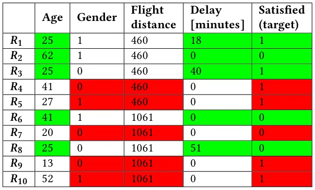
Last, since the target column is crucial for the AutoML process, our framework automatically inserts it into every DST.
Example 3.2. Consider the 10X5 dataset in Figure 2, taken from the flight service review dataset in our experiments (See Section 4.1). The green and red cells represent two different 5X3 data subsets: 𝑑𝑔𝑟𝑒𝑒𝑛 = 𝐷 [(1, 2, 3, 6, 8)(1, 4, 5)] and 𝑑𝑟𝑒𝑑 = 𝐷 [(4, 5, 7, 9, 10), (2, 3, 5)]. Note that both contain the target column (the right-most column in Figure 2).
As will be shown in Section 4, simply using a random DST (in which the row and column subsets are chosen uniformly at random) in our solution induces a substantial decrease in the accuracy of the AutoML process. Our goal is therefore to find a more representative DST, that preserves some characteristic of the original dataset. Let 𝐹 : D → R be a dataset measure which takes a dataset as input and evaluates a characteristic of it by a real number.
We define a measure-preserving DST as follows.
Definition 3.3 (Measure-Preserving DST). Given a dataset 𝐷, a DST 𝑑 = 𝐷 [𝑟, 𝑐], and a dataset-measure 𝐹 : D → R, we call a DST 𝑑 measure-preserving if 𝐹 (𝑑) ≈ 𝐹 (𝐷).
While any measure that evaluates a characteristic of the data may be applicable, in this work we use a dataset entropy function, which assesses the łamount of informationž conveyed in the data. In our context, we define dataset entropy as follows.
Definition 3.4 (Dataset Entropy). Given dataset 𝐷 of size 𝑁 × 𝑀, Let 𝐷𝑖 𝑗 be the value in row 𝑖 and column 𝑗.
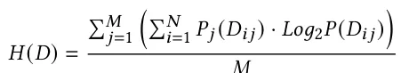
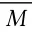
Where 𝑃𝑗(𝐷𝑖 𝑗) is a probability function corresponding to the frequency of the value in 𝐷𝑖 𝑗 w.r.t. Column 𝑗. For 𝐷𝑖 𝑗 = 𝑣:
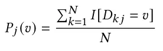
Example 3.5. Consider again the dataset and two subsets depicted in Figure 2. Calculating the dataset entropy we obtain:
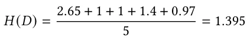
We indeed observe that 𝐷 contains two columns with high entropy (‘Age’ and ‘Delay’). These columns are also selected in the green DST, which obtains the score:
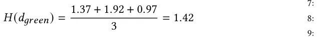
𝑑𝑔𝑟𝑒𝑒𝑛 is the 5X3 DST which obtains the closest dataset-entropy score to 𝐷. However, the red DST, which contains low-entropy columns, obtains a lower score of 𝐻 (𝑑𝑟𝑒𝑑) = 0.89. Hence, 𝑑𝑔𝑟𝑒𝑒𝑛 is considered a measure-preserving DST, whereas 𝑑𝑟𝑒𝑑 is not.
Suitability of entropy & alternative dataset measures. Entropy-based measures such as KL-divergence, cross-entropy and information gain are widely used to characterize data (e.g., in data profiling [1] and meta-learning [6]). Such measures determine the łclosenessž of two data distributions (which is widely used for variational inference [3], regression and classification loss [18], and more).
In our context, the dataset-entropy measure has three main advantages: (1) It is a non-parametric measure, having no prior assumption on the data distributions. This allows SubStrat to support a wide range of datasets. (2) Our suggested measure focuses on the data distributions rather than the values themselves (as is common for distance metrics such as Euclidean distance or Manhattan distance). This is more suitable to our setting, where the size of the compared arrays greatly differ. (3) A low entropy difference between distributions 𝑃 and 𝑄 implies that a model based on 𝑃 can very well predict 𝑄. This property is well suited for the downstream task in our setting, which is choosing an ML pipeline for the original dataset, based on computations performed on the subset.
Last, note that while dataset-entropy worked well in our experiments (see Section 4.5), our optimization algorithm, as described below, is generic and can take other possible dataset measures as input (e.g., 𝑝-norm, mean-correlation, and coefficient of variation).
3.2 DST as an Optimization Problem
Ideally, we would like to find the best-preserving DST for a dataset 𝐷. Namely, the best DST of size 𝑛 × 𝑚 can be found by:
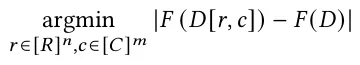
If 𝑛 and 𝑚 are small, then finding the best-preserving DST can be done in 𝑂 (𝑁𝑛 · 𝑀𝑚) time, by a brute-force search that traverses through all possible DST of size 𝑛 × 𝑚. Clearly, this becomes infeasible for large datasets or when a larger DST is needed.
We therefore define an optimization problem, which is to minimize the difference between the DST and the original dataset, i.e.,
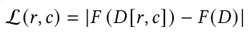
Note that while numerous methods and algorithms can be used to minimize L(𝑟, 𝑐) (See Section 4.2), we must use an approach that also obtains short convergence times. Otherwise, the optimization
Algorithm 1 Gen-DST
- 1: Input: dataset (𝐷), dataset-measure (𝐹), DST size (𝑛,𝑚) 2: Output: data subset (𝑑) 3: 𝑃0 ⇐ generate (𝜙) candidates in random 4: 𝑏𝑒𝑠𝑡_𝑑𝑠𝑡 ⇐ 𝑎𝑟𝑔𝑚𝑎𝑥𝐺∈𝑃0𝐹 (𝐺, 𝐷) 5: for generation 𝑖 ∈[1, . . . ,𝜓] do 6: 𝑃𝑖 ⇐ 𝑀𝑢𝑡𝑎𝑡𝑖𝑜𝑛_𝑂𝑝𝑒𝑟𝑎𝑡𝑜𝑟 (𝑃𝑖, 𝜉, 𝑝𝑟𝑐) 7: 𝑃𝑖 ⇐𝐶𝑟𝑜𝑠𝑠𝑜𝑣𝑒𝑟_𝑂𝑝𝑒𝑟𝑎𝑡𝑜𝑟 (𝑃𝑖, 𝑝𝑚) 8: 𝑃𝑖+1 ⇐ 𝑆𝑒𝑙𝑒𝑐𝑡𝑖𝑜𝑛_𝑂𝑝𝑒𝑟𝑎𝑡𝑜𝑟 (𝑃𝑖, 𝛼) 9: if max𝐺∈𝑃𝑖+1 𝐹 (𝐺, 𝐷) > 𝐹 (𝑏𝑒𝑠𝑡_𝑑𝑠𝑡, 𝐷) then 10: 𝑏𝑒𝑠𝑡_𝑑𝑠𝑡 ⇐ 𝑎𝑟𝑔𝑚𝑎𝑥𝐺∈𝑃𝑖+1𝐹 (𝐺, 𝐷) 11: end if 12: end for 13: return 𝑑 := 𝐷 [𝑏𝑒𝑠𝑡_𝑑𝑠𝑡 (𝑟), 𝑏𝑒𝑠𝑡_𝑑𝑠𝑡 (𝑐)]
process will take too long, hence diminishing the efficacy of our overall solution in reducing AutoML running times.
3.3 A Genetic-Based Algorithm for Finding DST
Our framework employs a Genetic Algorithm (GA), a well-known and commonly-used meta-heuristic search method, based on the biological theory of evolution [23]. Briefly, GA simulates evolution through a natural selection process: First, a population of 𝜙 candidate-solutions, each comprising a set of properties, referred to as genes is selected at random. The algorithm then iteratively mutates and alters the genes in order to create łbetterž solutions w.r.t. a fitness function, which corresponds to the optimization objective. In particular, at each generation (i.e., iteration), the GA typically performs several stochastic operators [4, 10]: (1) a mutation operator which induces random noise into the genes of a candidate-solution, (2) a cross-over operator which combines the genes of two candidate-solutions, and (3) a selection operator which refines the population of the next generation, by keeping fitter candidate-solutions with higher probability than less-fitting solutions. Finally, after a number of generations (𝜓 - chosen according to predefined stopping criteria), the fittest candidate-solution is selected as the output of the GA algorithm.
We next describe Gen-DST, our genetic-based algorithm for finding measure-preserving DSTs. Importantly, Gen-DST jointly selects rows and columns, and therefore uses dedicated genetic representation and operators, adapted from the standard ones as appear in [4, 10, 23]. The adaptations made in Gen-DST ensure a balanced mutation and combination of candidate solutions, w.r.t. both rows and columns, as described below.
Genetic representation of candidate-DSTs. The genetic representation of a candidate-DST, denoted 𝐺, comprises of 𝑛 + 𝑚 chromosomes: 𝑛 row-chromosomes, that correspond to 𝑛 row indices of dataset 𝐷, and 𝑚 column-chromosomes, that correspond to 𝑚 column-indices. More formally, 𝐺 ≔ (𝑟, 𝑐), 𝑟 ∈[𝑅]𝑛, 𝑐 ∈[𝐶]𝑚, where 𝑅 and 𝐶 denote the row and column indices of dataset 𝐷. Fitness Function. The fitness function 𝑓 (𝐺) is simply the negative loss of the DST-candidate 𝐺 = (𝑟, 𝑐), Namely,
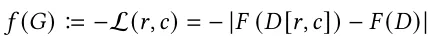
Gen-DST Workflow & Operators. Gen-DST, as depicted in Algorithm 1, works as follows. First, an initial population 𝑃 of candidate DSTs is randomly generated, s.t. each candidate-DST 𝐺 (𝑟, 𝑐) contains the target column 𝑦, i.e. 𝑡 ⊂ 𝑐. Then, for each generation 𝑖, we perform (1) mutation, (2) cross-over and (3) selection, in order to generate the next-generation population 𝑃𝑖+1:
(1) Mutation. The mutation operator is stochastically employed, for each candidate-solution 𝐺 = (𝑟, 𝑐) in the population 𝑃𝑖 with probability 𝜉. First, we randomly decide if to mutate rows or columns w.r.t. probability 𝑝𝑟𝑐, which we define to be 𝑁/(𝑁 + 𝑀) (for choosing rows). If, for example, a row-mutation is decided upon, we randomly replace one of the row-indices in 𝑟. Namely, we mutate 𝐺 and form 𝐺′ s.t.
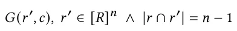
A similar process is performed for column mutations, only that the target column 𝑦 cannot be mutated.
(2) Cross-Over. Cross-over is employed for two candidate-DSTs 𝐺𝑎 = (𝑟𝑎, 𝑐𝑎) and 𝐺𝑏 = (𝑟𝑏, 𝑐𝑏) in population 𝑃𝑖 with the goal of creating two next-generation DSTs, 𝐺𝑎𝑏 and 𝐺𝑏𝑎. We begin by selecting whether to cross rows or columns (similar to the mutation operator), with probability 𝑝𝑟𝑐. Then, assuming (w.l.o.g.) that columns cross-ever is selected, we randomly choose a split-size 1 < 𝑠 < 𝑚, and use it to split both 𝑐𝑎 and 𝑐𝑏, each to two random subsets - one of size 𝑠 and one of size 𝑚 −𝑠, i.e., 𝑐𝑎 = 𝑐𝑠𝑎 ∪𝑐𝑚−𝑠 and 𝑐𝑏 = 𝑐𝑠 𝑏 ∪𝑐𝑚−𝑠 . 𝑎 𝑏 The cross-over then unifies complementing subsets from 𝑎 and 𝑏, creating 𝑐𝑎𝑏 and 𝑐𝑏𝑎:
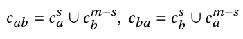
Finally, the next-generation DSTs are set as 𝐺𝑎𝑏 = (𝑟, 𝑐𝑎𝑏) and 𝐺𝑏𝑎 = (𝑟, 𝑐𝑏𝑎)2. The cross-over operation is performed over the entire population 𝑃𝑖: 𝑃𝑖 is first split into disjointed pairs of candidate- DSTs, then the cross-over is performed on each such pair.
(3) Selection. Last, after employing mutation and cross-over, we employ the selection operator which forms the next-generation population 𝑃𝑖+1. We use the royalty tournament operator [4], which selects the best 𝛼·𝜙 candidate-DSTs from 𝑃𝑖 according to the fitness function 𝑓 (𝐺). The rest of the 𝜙 (1 − 𝛼) DSTs are sampled (with repetitions) according to their fitness score, i.e., with probability:
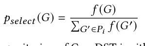
Last, the stopping criterion of Gen-DST is either reaching a predefined limit on the generations number, or a convergence criterion that stops the execution when the fittest DST of population 𝑃𝑖+1 is not significantly better than the fittest solution in 𝑃𝑖. In this case, we return the DST that obtained the highest fitness score, over all previous generations.
3.4 Fine-Tuning the Intermediate Configuration
Gen-DST generates a DST 𝑑, which is then given as input to the Auto-ML tool 𝐴, instead of the full dataset 𝐷, which in turn output an intermediate ML pipeline configuration 𝑀′.
The final step performed by SubStrat is to fine-tune the intermediate configuration 𝑀′ by a restricted execution of 𝐴 on the full dataset 𝐷. The restriction of the process is twofold: (1) We restrict the configuration search space by forcing it to use the same ML model discovered in 𝑀′. (2) We further restrict the process by time, using a stopping condition on the predictive accuracy of the current best pipeline. In our implementation, if the derivative of the obtained accuracy is less than 0.02 for three consecutive steps, the fine-tuning process is terminated.
As shown in our experimental results in Section 4.3, this step slightly increases the running times of SubStrat, but boosts the relative accuracy (compared to the full AutoML) by about 6%.
4 Experiments
We conducted a thorough experimental study with the goal of examining the effectiveness of SubStrat in reducing the running times of existing AutoML tools while retaining the accuracy of their output ML pipelines.
4.1 Setup & Methodology
Experimental Framework & Methodology. Given an input dataset and a target feature, we first directly employ an AutoML tool and obtain its output ML pipeline configuration.
We record both the running time and the accuracy of the resulting model, which serve as our primary baseline, denoted Full- AutoML. We then examine whether our subset-based strategy can indeed reduce AutoML running times, and still generate ML pipelines as accurately as Full-AutoML. To generate the data subsets, we used Gen-DST as well as 10 other baselines (see below). For each instance, we compute the relative running time (including the generation of the subset) and accuracy w.r.t Full-AutoML. We report the following metrics: time-reduction, which indicates how much time was saved:
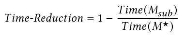
We also report the relative accuracy, indicating the proportion of accuracy of Full-AutoML that was successfully retained:
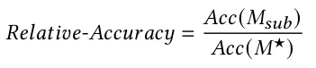
Datasets. We used 18 public datasets from Kaggle [50], UCI Machine Learning Repository [46], and OpenML [42]. The datasets, as depicted in Table 1, are of different shapes that can be categorized as follows: (1) standard, containing several thousand rows and a few dozen columns, as most datasets in the popular OpenML-C18 benchmark [2]; (2) Long, containing more than 1M rows and a dozen columns; (3) HighDim are high dimensional dataset, with several hundred columns; (4) HighDim-Wide are particularly wide datasets that contain up to 11K columns, and have a columns-to-rows ratio of at least 70%. Links to the full datasets can be found in our code repository [45].
Auto-ML methods. We evaluated SubStrat using Auto-Sklearn, TPOT, and H2O, three highly-popular AutoML tools. The tools have a substantially different underlying technology: (1) Auto- Sklearn[14, 15], an industry-standard tool that uses Bayesian optimization methods together with meta-learning. It works on top of the Python Scikit-Learn library [44], and generates an ML pipeline configuration comprising of feature prepossessing, model selection, and hyper-parameters optimization. (2) Tree-Based Pipeline Optimization Tool (TPOT) [39], a tool that also utilizes Scikit-Learn but uses a genetic programming approach to explore the configuration search space. (3) H2O [30] uses a narrower configuration search space but focuses on stacked ensembles of models.
| Symbol | Domain | #Rows | #Cols | #Cells |
|---|---|---|---|---|
| 𝑆𝑡𝑎𝑛𝑑𝑎𝑟𝑑-1 | Heart disease | 79K | 7 | 0.55M |
| 𝑆𝑡𝑎𝑛𝑑𝑎𝑟𝑑-2 | Flight service review | 130K | 23 | 2.98M |
| 𝑆𝑡𝑎𝑛𝑑𝑎𝑟𝑑-3 | Signal processing | 10K | 5 | 70K |
| 𝑆𝑡𝑎𝑛𝑑𝑎𝑟𝑑-4 | Air quality | 57K | 7 | 0.40M |
| 𝑆𝑡𝑎𝑛𝑑𝑎𝑟𝑑-5 | Bike demand | 17K | 9 | 150K |
| 𝑆𝑡𝑎𝑛𝑑𝑎𝑟𝑑-6 | Car insurance | 10K | 18 | 180K |
| 𝑆𝑡𝑎𝑛𝑑𝑎𝑟𝑑-7 | Lead generation form | 7K | 15 | 100K |
| 𝑆𝑡𝑎𝑛𝑑𝑎𝑟𝑑-8 | Mushroom classif. | 8K | 23 | 180K |
| 𝐿𝑜𝑛𝑔-1 | Criteo Click Predict. | 2M | 12 | 24M |
| 𝐿𝑜𝑛𝑔-2 | Poker matches | 1M | 12 | 12M |
| 𝐻𝑖𝑔ℎ𝐷𝑖𝑚-1 | KDD 98 | 82K | 478 | 39.19M |
| 𝐻𝑖𝑔ℎ𝐷𝑖𝑚-2 | Myocardial infarction | 1.7K | 123 | 210K |
| 𝐻𝑖𝑔ℎ𝐷𝑖𝑚-3 | KDD Cup 2009 | 50K | 231 | 11.55M |
| 𝐻𝑖𝑔ℎ𝐷𝑖𝑚-4 | Philippine | 6K | 309 | 1.80M |
| 𝐻𝑖𝑔ℎ𝐷𝑖𝑚-5 | Isolet | 8K | 614 | 4.78M |
| 𝐻𝑖𝑔ℎ𝐷𝑖𝑚-𝑊-1 | AP Breast Colon | 630 | 11K | 6.88M |
| 𝐻𝑖𝑔ℎ𝐷𝑖𝑚-𝑊-2 | Micro-mass | 571 | 1301 | 0.74M |
| 𝐻𝑖𝑔ℎ𝐷𝑖𝑚-𝑊-3 | Gisette | 7K | 5K | 35M |
Implementation & Hardware. SubStrat and the rest of the baseline algorithms were implemented in Python 3. Our source code is fully available in [45]. We ran the experiments on an Ubuntu Server with an Intel Core i7-9700K CPU and 64GB RAM.
4.2 Baseline Methods
We implemented 10 different baselines in 6 different categories (A-F). To clarify the scope of comparison, recall again that AutoML methods require the raw data as input, therefore any approach that alters the data (e.g., PCA, embedding) is inapplicable. Also, we only compare SubStrat to other methods for reducing the data size rather than the configuration space, as the latter is performed by the chosen AutoML tool. The baselines in categories A-F were therefore devised to answer the following questions:
- i. Can a trivial, random DST perform well enough? (Category A) ii. Can we use different, existing optimizations for finding measure-preserving DSTs? (Categories A-C)
- iii. Can we generate effective DSTs using existing techniques for row sampling and column selection? (Categories D-E)
- iv. Can SubStrat obtain good performance without the fine-tuning phase? (Category F)
A. Monte-Carlo Search. We began with a simple random search technique, which given a predefined time/iteration budget 𝐵, randomly generates DSTs, calculates their measure-preserving loss (as defined in Section 3.2), and at the end of the time limit (or max iteration) returns the DST that obtained the minimal loss. We use three instances with different budgets: (1) MC-100, which examines 100 DSTs, (2) MC-100K, designed to have approximately the same running- times as Gen-DST, allowing it to compare about 100K DSTs. Last, to demonstrate the optimization challenge of finding DSTs, we also examined (3) MC-24H, which stops after 24 hours. While the latter cannot improve the running time of AutoML, we examine its performance only in terms of relative accuracy.
B. Multi-Arm Bandit. Additionally, we implemented a more sophisticated Multi-Arm Bandit (MAB) baseline, which also attempts to find a measure-preserving DST. MAB is a well-known search framework that balances exploration and exploitation within the search space[31]. We implemented the MAB baseline by formulating two types of arms: row-arms and column-arms. At each round, the model needs to choose 𝑛 rows and 𝑚 columns, and balance the exploration/exploitation of its choices using an 𝜖-greedy policy.
C. Greedy Selection. Another possible optimization is to use a greedy selection process. Since the loss is dependent on both the rows and the columns, we used two instances of the algorithm: (1) (Greedy- Seq) which first selects 𝑛 rows and then 𝑚 columns. The 𝑛 rows are found in a greedy manner, s.t. at each step we add to the DST 𝑑 a new row from 𝐷 which locally diminishes the local loss of 𝑑 (while using all columns in 𝐷). In the second step we choose 𝑚 columns in a similar manner, only that the loss is computed w.r.t. the rows already found in the row-selection phase. We also implemented (2) Greedy-Mult which attempts to greedily select both a row and a column at each step.
D. Clustering-Based Approach. This method does not attempt to find measure-preserving DSTs, yet tries to select representative rows and columns using clustering. The KM Baseline first clusters the rows in 𝐷 into 𝑛 clusters, by employing K-means clustering [35]. Then, to choose 𝑛 representative rows, we pick the ones that are the closest to each of the 𝑛 cluster centroids. To select 𝑚 columns, we do the same process by applying K-Means on the column vectors.
E. Information-Gain (Feature Selection). Information-gain (IG) is a commonly used technique for feature selection [29]. Similarly to our dataset-entropy measure, it is also based on entropy calculations, where the goal is to select 𝑚 columns that have the highest IG, w.r.t. the target feature 𝑦. Intuitively, these are the columns that provide the most łinformationž about 𝑦. As IG can only be used for feature selection, we implemented two different baselines here: (1) IG-Rand which selects columns using 𝐼𝐺 and chooses the rows at random, and (2) IG-KM, which uses IG for column selection, and the KM baseline to choose the rows.
F. SubStrat Without Fine-Tune. Last, we examine the importance of the fine-tuning phase, by using a limited version of SubStrat, denoted SubStrat-NF. This version outputs the intermediate configuration 𝑀′ ś resulted by applying the AutoML tool only on the DST generated by Gen-DST, without employing fine tuning on the full dataset.
Baselines Default Configurations. For each dataset shape category (as depicted in Table 1) we performed a grid search, optimizing on the harmonic mean of time reduction and relative accuracy. The DST size grid used for all baselines is {𝑠𝑞𝑟𝑡, 𝑙𝑛} ∪{0.05𝑖 · 𝑛}19 𝑖=1 for the rows and columns (replacing 𝑛 with 𝑚). We further varied the following parameters in SubStrat: 𝜓 (num. of generations), ranged in (30,40,45); 𝜙 (population size) ranged in (200,250,300,350). For the baselines, MAB has an additional hyper-parameter (other than the DST size) of 𝜖 (varied from 0.001 to 0.05, in intervals of 0.005).
Notes
2In case the size of 𝑐𝑎𝑏 or 𝑐𝑏𝑎 is smaller than 𝑚, we insert the required amount of columns at random, while also making sure the target column 𝑦 is contained in both.
References
- Ziawasch Abedjan, Lukasz Golab, and Felix Naumann. 2015. Profiling relational data: a survey. The VLDB Journal 24, 4 (2015), 557ś581.
- Bernd Bischl, Giuseppe Casalicchio, Matthias Feurer, Frank Hutter, Michel Lang, Rafael G Mantovani, Jan N van Rijn, and Joaquin Vanschoren. 2017. Openml benchmarking suites. arXiv preprint arXiv:1708.03731 (2017).
- David M Blei, Alp Kucukelbir, and Jon D McAuliffe. 2017. Variational inference: A review for statisticians. Journal of the American statistical Association 112, 518 (2017), 859ś877.
- Z. W. Bo, L. Z. Hua, and Z. G. Yu. 2006. Optimization of process route by genetic algorithms. Robotics and Computer-Integrated Manufacturing 22 (2006), 180ś188.
- Matthias Boehm, Iulian Antonov, Sebastian Baunsgaard, Mark Dokter, Robert Ginthör, Kevin Innerebner, Florijan Klezin, Stefanie Lindstaedt, Arnab Phani, Benjamin Rath, et al. 2020. SystemDS: A declarative machine learning system for the end-to-end data science lifecycle. The Conference on Innovative Data Systems Research (CIDR).
- Ciro Castiello, Giovanna Castellano, and Anna Maria Fanelli. 2005. Meta-data: Characterization of input features for meta-learning. In International Conference on Modeling Decisions for Artificial Intelligence. Springer, 457ś468.
- Girish Chandrashekar and Ferat Sahin. 2014. A survey on feature selection methods. Computers & Electrical Engineering 40, 1 (2014), 16ś28.
- Andrzej Cichocki. 2014. Era of big data processing: A new approach via tensor networks and tensor decompositions. arXiv preprint arXiv:1403.2048 (2014).
- Michael B Cohen and Richard Peng. 2015. Lp row sampling by lewis weights. In Proceedings of the 47th annual ACM symposium on Theory of computing. 183ś192.
- L. Davis. 1985. Applying adaptive algorithms to epistatic domains. Proceedings of the international joint conference on artificial intelligence (1985), 162ś164.
- Alfonso Delgado-Bonal and Alexander Marshak. 2019. Approximate entropy and sample entropy: A comprehensive tutorial. Entropy 21, 6 (2019), 541.
- Iddo Drori, Yamuna Krishnamurthy, Remi Rampin, Raoni de Paula Lourenco, Jorge Piazentin Ono, Kyunghyun Cho, Claudio Silva, and Juliana Freire. 2021. AlphaD3M: Machine learning pipeline synthesis. arXiv (2021).
- Marina Drosou and Evaggelia Pitoura. 2010. Search result diversification. ACM SIGMOD Record 39, 1 (2010), 41ś47.
- Matthias Feurer, Katharina Eggensperger, Stefan Falkner, Marius Lindauer, and Frank Hutter. 2020. Auto-sklearn 2.0: Hands-free automl via meta-learning. arXiv preprint arXiv:2007.04074 (2020).
- Matthias Feurer, Aaron Klein, Katharina Eggensperger, Jost Springenberg, Manuel Blum, and Frank Hutter. 2015. Efficient and robust automated machine learning. Advances in neural information processing systems 28 (2015).
- M. Feurer, A. Klevin, K. Eggensperger, J. T. Springenberg, M. Blum, and F. Hutter. 2019. Auto-sklearn: Efficient and Robust Automated Machine Learning.
- Pieter Gijsbers, Erin LeDell, Janek Thomas, Sébastien Poirier, Bernd Bischl, and Joaquin Vanschoren. 2019. An open source AutoML benchmark. arXiv preprint arXiv:1907.00909 (2019).
- Elliott Gordon-Rodriguez, Gabriel Loaiza-Ganem, Geoff Pleiss, and John Patrick Cunningham. 2020. Uses and abuses of the cross-entropy loss: Case studies in modern deep learning. (2020).
- Suyog Gupta, Wei Zhang, and Fei Wang. 2016. Model accuracy and runtime tradeoff in distributed deep learning: A systematic study. In 2016 IEEE 16th International Conference on Data Mining (ICDM). IEEE, 171ś180.
- Xin He, Kaiyong Zhao, and Xiaowen Chu. 2021. AutoML: A Survey of the State-of-the-Art. Knowledge-Based Systems 212 (2021), 106622.
- Yuval Heffetz, Roman Vainshtein, Gilad Katz, and Lior Rokach. 2020. Deepline: Automl tool for pipelines generation using deep reinforcement learning and hierarchical actions filtering. In Proceedings of the 26th ACM SIGKDD International Conference on Knowledge Discovery & Data Mining. 2103ś2113.
- Mossad Helali, Essam Mansour, Ibrahim Abdelaziz, Julian Dolby, and Kavitha Srinivas. 2022. A Scalable AutoML Approach Based on Graph Neural Networks. Proc. VLDB Endow. 15, 11 (jul 2022), 2428ś2436. doi:10.14778/3551793.3551804
- J. H. Holland. 1992. Genetic Algorithms. Scientific American 267, 1 (1992), 66ś73.
- Frank Hutter, Holger H Hoos, and Kevin Leyton-Brown. 2011. Sequential model-based optimization for general algorithm configuration. In International conference on learning and intelligent optimization. Springer, 507ś523.
- Shubhra Kanti Karmaker, Md Mahadi Hassan, Micah J Smith, Lei Xu, Chengxiang Zhai, and Kalyan Veeramachaneni. 2021. AutoML to Date and Beyond: Challenges and Opportunities. ACM Computing Surveys (CSUR) 54, 8 (2021), 1ś36.
- Matthew Kay, Shwetak N Patel, and Julie A Kientz. 2015. How good is 85%? A survey tool to connect classifier evaluation to acceptability of accuracy. In Proceedings of the 33rd annual ACM conference on human factors in computing systems. 347ś356.
- Krishnateja Killamsetty, Durga Sivasubramanian, Ganesh Ramakrishnan, and Rishabh Iyer. 2021. Glister: Generalization based data subset selection for efficient and robust learning. In Proceedings of the AAAI Conference on Artificial Intelligence, Vol. 35. 8110ś8118.
- Jaehong Kim, Sangyeul Lee, Sungwan Kim, Moonsu Cha, Jung Kwon Lee, Young-duck Choi, Yongseok Choi, Dong-Yeon Cho, and Jiwon Kim. 2018. Auto-meta: Automated gradient based meta learner search. arXiv preprint arXiv:1806.06927 (2018).
- Alexander Kraskov, Harald Stögbauer, and Peter Grassberger. 2004. Estimating mutual information. Physical review E 69, 6 (2004), 066138.
- Erin LeDell and Sebastien Poirier. 2020. H2o automl: Scalable automatic machine learning. In Proceedings of the AutoML Workshop at ICML, Vol. 2020.
- Mian Li, Shapour Azarm, and Vikrant Aute. 2005. A multi-objective genetic algorithm for robust design optimization. In Proceedings of the 7th annual conference on Genetic and evolutionary computation. 771ś778.
- Tian Li, Jie Zhong, Ji Liu, Wentao Wu, and Ce Zhang. 2018. Ease. ml: Towards multi-tenant resource sharing for machine learning workloads. Proceedings of the VLDB Endowment 11, 5 (2018), 607ś620.
- Yang Li, Yu Shen, Wentao Zhang, Ce Zhang, and Bin Cui. 2022. VolcanoML: speeding up end-to-end AutoML via scalable search space decomposition. The VLDB Journal (2022), 1ś25.
- Edo Liberty, Zohar Karnin, Bing Xiang, Laurence Rouesnel, Baris Coskun, Ramesh Nallapati, Julio Delgado, Amir Sadoughi, Yury Astashonok, Piali Das, et al. 2020. Elastic machine learning algorithms in amazon sagemaker. In Proceedings of the 2020 ACM SIGMOD International Conference on Management of Data. 731ś737.
- Aristidis Likas, Nikos Vlassis, and Jakob J Verbeek. 2003. The global k-means clustering algorithm. Pattern recognition 36, 2 (2003), 451ś461.
- Baharan Mirzasoleiman, Jeff Bilmes, and Jure Leskovec. 2020. Coresets for data-efficient training of machine learning models. In International Conference on Machine Learning. PMLR, 6950ś6960.
- Baharan Mirzasoleiman, Kaidi Cao, and Jure Leskovec. 2020. Coresets for robust training of deep neural networks against noisy labels. Advances in Neural Information Processing Systems 33 (2020), 11465ś11477.
- Tianyu Mu, Hongzhi Wang, Shenghe Zheng, Shaoqing Zhang, Cheng Liang, and Haoyun Tang. 2021. Assassin: an automatic classification system based on algorithm selection. Proceedings of the VLDB Endowment 14, 12 (2021), 2751ś 2754.
- Randal S Olson, Nathan Bartley, Ryan J Urbanowicz, and Jason H Moore. 2016. Evaluation of a tree-based pipeline optimization tool for automating data science. In Proceedings of the genetic and evolutionary computation conference 2016. 485ś 492.
- Randal S Olson and Jason H Moore. 2016. TPOT: A tree-based pipeline optimization tool for automating machine learning. In Workshop on automatic machine learning. PMLR, 66ś74.
- R. S. Olson and J. H. Moore. 2016. TPOT: A Tree-based Pipeline Optimization Tool for Automating Machine Learning. In JMLR: Workshop and Conference Proceedings, Vol. 64. 66ś74.
- OpenML. 2022. https://www.openml.org/.
- Y. Park, M. Cafarella, and B. Mozafari. 2016. Visualization-aware sampling for very large databases. In 2016 IEEE 32nd International Conference on Data Engineering (ICDE). 755ś766. doi:10.1109/ICDE.2016.7498287
- F. Pedregosa, G. Varoquaux, A. Gramfort, V. Michel, B. Thirion, O. Grisel, M. Blondel, P. Prettenhofer, R. Weiss, V. Dubourg, J. Vanderplas, A. Passos, D. Cour-napeau, M. Brucher, M. Perrot, and E. Duchesnay. 2011. Scikit-learn: Machine Learning in Python. Journal of Machine Learning Research 12 (2011), 2825ś2830.
- SubStrat Github Repository. 2022. https://github.com/teddy4445/SubStrat.
- UCI Machine Learning Repository. 2022. https://archive.ics.uci.edu/.
- Chunnan Wang, Hongzhi Wang, Tianyu Mu, Jianzhong Li, and Hong Gao. 2020. Auto-model: utilizing research papers and HPO techniques to deal with the cash problem. In 2020 IEEE 36th International Conference on Data Engineering (ICDE). IEEE, 1906ś1909.
- Chi Wang, Qingyun Wu, Markus Weimer, and Erkang Zhu. 2021. FLAML: a fast and lightweight AutoML Library. Proceedings of Machine Learning and Systems 3 (2021), 434ś447.
- Jonathan Waring, Charlotta Lindvall, and Renato Umeton. 2020. Automated machine learning: Review of the state-of-the-art and opportunities for healthcare. Artificial Intelligence in Medicine 104 (2020), 101822.
- Kaggle Website. 2022. https://github.com/teddy4445/SubStrat.
- Abraham Itzhak Weinberg and Mark Last. 2019. Selecting a representative decision tree from an ensemble of decision-tree models for fast big data classification. Journal of Big Data 6, 1 (2019), 1ś17.
- Duch Wlodzislaw, Tadeusz Wieczorek, Jacek Biesiada, and Marcin Blachnik. 2004. Comparison of feature ranking methods based on information entropy, Vol. 2. 1415 ś 1419 vol.2. doi:10.1109/IJCNN.2004.1380157
- Qingyun Wu, Chi Wang, and Silu Huang. 2021. Frugal optimization for cost-related hyperparameters. In Proceedings of the AAAI Conference on Artificial Intelligence, Vol. 35. 10347ś10354.
- Anatoly Yakovlev, Hesam Fathi Moghadam, Ali Moharrer, Jingxiao Cai, Nikan Chavoshi, Venkatanathan Varadarajan, Sandeep R Agrawal, Sam Idicula, Tomas Karnagel, Sanjay Jinturkar, et al. 2020. Oracle automl: a fast and predictive automl pipeline. PVLDB 13, 12 (2020), 3166ś3180.
This page reproduces the article Lazebnik et al. (2023), VLDP, doi:10.14778/3574245.3574261, under the CC BY-NC-ND 4.0 licence. Text, tables and figures were extracted from the PDF and the layout adapted for the web; the PDF is the version of record.